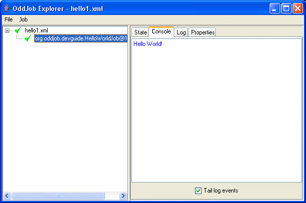
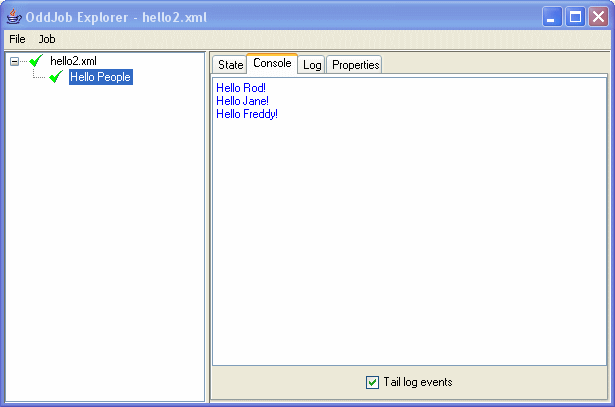

Writing an Oddjob job.
Oddjob's philosophy is to be as unobtrusive as possible. A job in Oddjob is just an
java.lang.Runnable or a java.util.concurrent.Callable.
For all but the most advanced interaction with the framework, you don't need Oddjob on the classpath.
Here's how easy it is to write a job:
{@oddjob.java.file src/main/java/org/oddjob/devguide/HelloWorldJob.java}To get Oddjob to run our job we need to create a configuration file:
{@oddjob.xml.file examples/devguide/hello1.xml}And run it:
$ java -jar run-oddjob.jar -cp examples/classes -f examples/devguide/hello1.xml
Hello World!
Notice that the classpath option -cp is after the -jar. This is Oddjobs option, not Java's. This is because -jar ignores any existing classpath and any classpath option.
We can now also load it in Oddjob Explorer (but we need still need the classpath).
$ java -jar run-oddjob.jar -cp examples/classes examples/devguide/hello1.xml
We get:
Here's a configurable job.
{@oddjob.java.file src/main/java/org/oddjob/devguide/HelloPeopleJob.java}With a configuration:
{@oddjob.xml.file examples/devguide/hello2.xml}And fire it up as before:
The job also has a nice name. We also gave our new job a toString()
method, and that's what explorer uses to label the job.
So lets take a moment to reflect on what we've got:
Not bad for a dozen lines of code.